Note
Click here to download the full example code
Style sheets reference¶
This script demonstrates the different available style sheets on a common set of example plots: scatter plot, image, bar graph, patches, line plot and histogram,
- 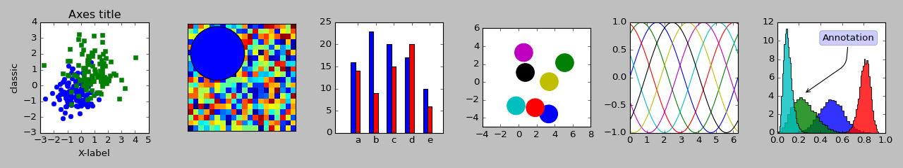
- 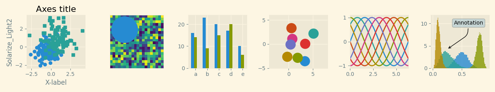
- 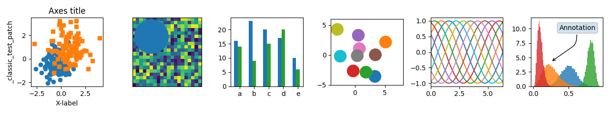
- 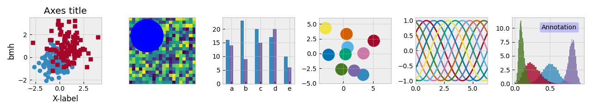
- 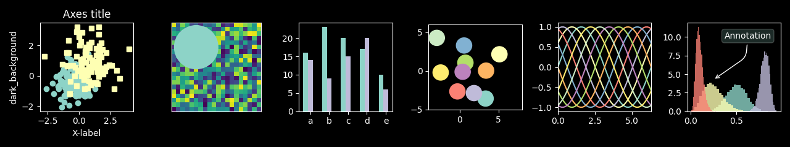
- 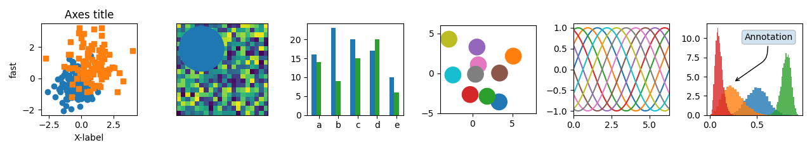
- 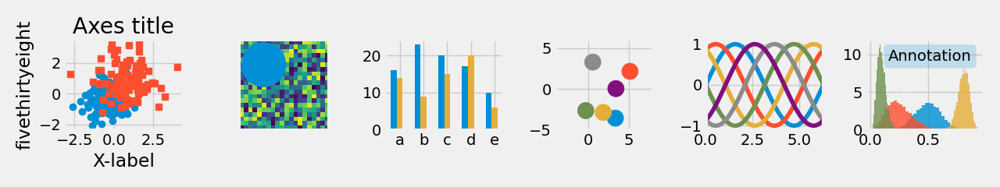
- 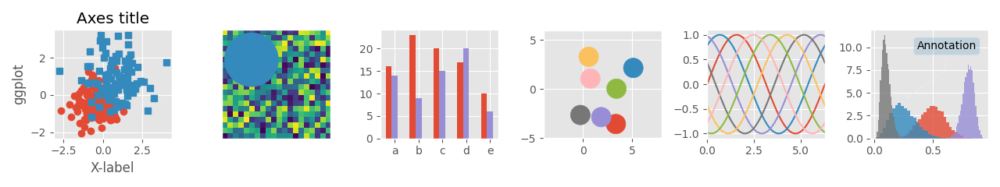
- 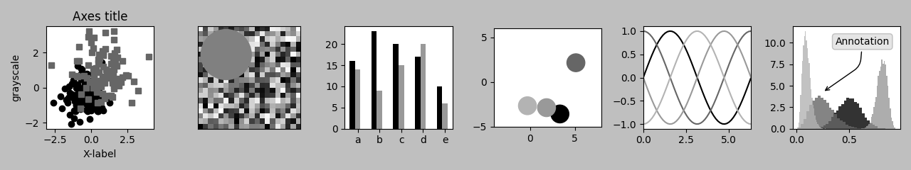
- 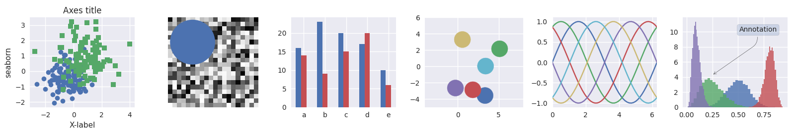
- 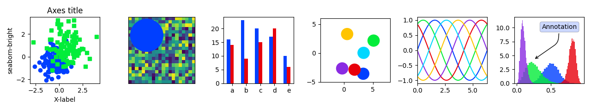
- 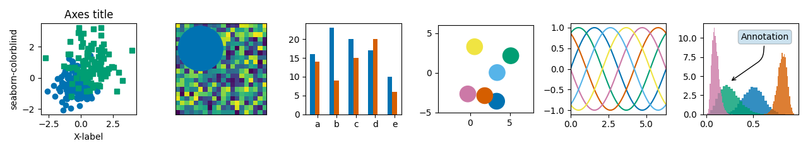
- 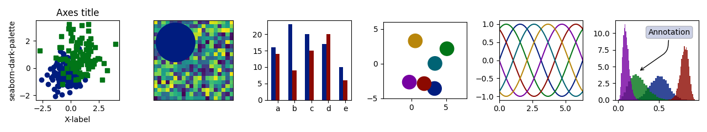
- 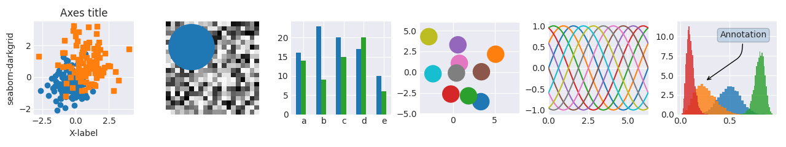
- 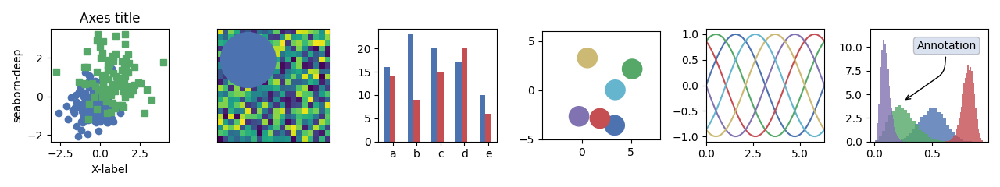
- 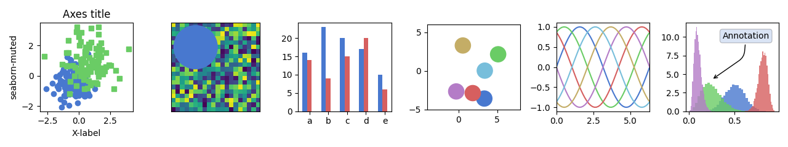

- 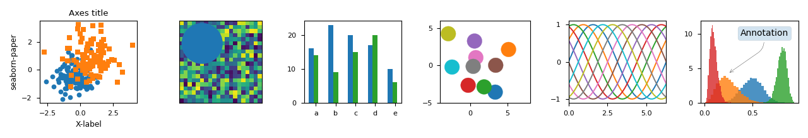
- 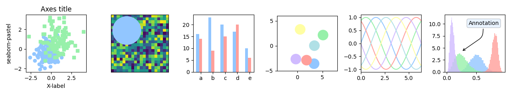
- 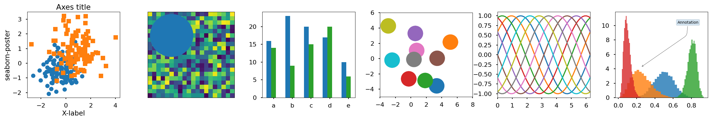
- 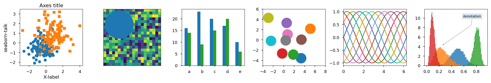
- 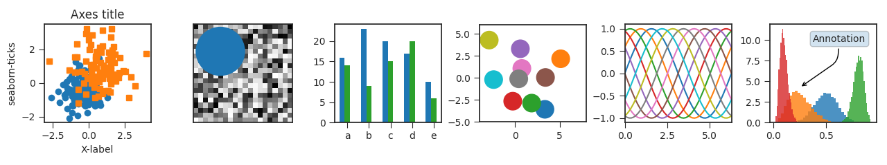
- 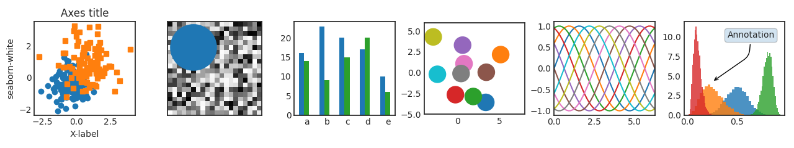
- 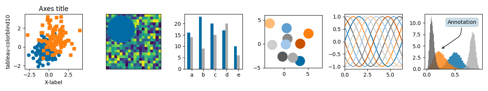
Out:
/root/matplotlib/examples/style_sheets/style_sheets_reference.py:114: RuntimeWarning: More than 20 figures have been opened. Figures created through the pyplot interface (`matplotlib.pyplot.figure`) are retained until explicitly closed and may consume too much memory. (To control this warning, see the rcParam `figure.max_open_warning`).
fig, axs = plt.subplots(ncols=6, nrows=1, num=style_label,
import numpy as np
import matplotlib.pyplot as plt
# Fixing random state for reproducibility
np.random.seed(19680801)
def plot_scatter(ax, prng, nb_samples=100):
"""Scatter plot."""
for mu, sigma, marker in [(-.5, 0.75, 'o'), (0.75, 1., 's')]:
x, y = prng.normal(loc=mu, scale=sigma, size=(2, nb_samples))
ax.plot(x, y, ls='none', marker=marker)
ax.set_xlabel('X-label')
ax.set_title('Axes title')
return ax
def plot_colored_sinusoidal_lines(ax):
"""Plot sinusoidal lines with colors following the style color cycle."""
L = 2 * np.pi
x = np.linspace(0, L)
nb_colors = len(plt.rcParams['axes.prop_cycle'])
shift = np.linspace(0, L, nb_colors, endpoint=False)
for s in shift:
ax.plot(x, np.sin(x + s), '-')
ax.set_xlim([x[0], x[-1]])
return ax
def plot_bar_graphs(ax, prng, min_value=5, max_value=25, nb_samples=5):
"""Plot two bar graphs side by side, with letters as x-tick labels."""
x = np.arange(nb_samples)
ya, yb = prng.randint(min_value, max_value, size=(2, nb_samples))
width = 0.25
ax.bar(x, ya, width)
ax.bar(x + width, yb, width, color='C2')
ax.set_xticks(x + width)
ax.set_xticklabels(['a', 'b', 'c', 'd', 'e'])
return ax
def plot_colored_circles(ax, prng, nb_samples=15):
"""
Plot circle patches.
NB: draws a fixed amount of samples, rather than using the length of
the color cycle, because different styles may have different numbers
of colors.
"""
for sty_dict, j in zip(plt.rcParams['axes.prop_cycle'], range(nb_samples)):
ax.add_patch(plt.Circle(prng.normal(scale=3, size=2),
radius=1.0, color=sty_dict['color']))
# Force the limits to be the same across the styles (because different
# styles may have different numbers of available colors).
ax.set_xlim([-4, 8])
ax.set_ylim([-5, 6])
ax.set_aspect('equal', adjustable='box') # to plot circles as circles
return ax
def plot_image_and_patch(ax, prng, size=(20, 20)):
"""Plot an image with random values and superimpose a circular patch."""
values = prng.random_sample(size=size)
ax.imshow(values, interpolation='none')
c = plt.Circle((5, 5), radius=5, label='patch')
ax.add_patch(c)
# Remove ticks
ax.set_xticks([])
ax.set_yticks([])
def plot_histograms(ax, prng, nb_samples=10000):
"""Plot 4 histograms and a text annotation."""
params = ((10, 10), (4, 12), (50, 12), (6, 55))
for a, b in params:
values = prng.beta(a, b, size=nb_samples)
ax.hist(values, histtype="stepfilled", bins=30,
alpha=0.8, density=True)
# Add a small annotation.
ax.annotate('Annotation', xy=(0.25, 4.25),
xytext=(0.9, 0.9), textcoords=ax.transAxes,
va="top", ha="right",
bbox=dict(boxstyle="round", alpha=0.2),
arrowprops=dict(
arrowstyle="->",
connectionstyle="angle,angleA=-95,angleB=35,rad=10"),
)
return ax
def plot_figure(style_label=""):
"""Setup and plot the demonstration figure with a given style."""
# Use a dedicated RandomState instance to draw the same "random" values
# across the different figures.
prng = np.random.RandomState(96917002)
# Tweak the figure size to be better suited for a row of numerous plots:
# double the width and halve the height. NB: use relative changes because
# some styles may have a figure size different from the default one.
(fig_width, fig_height) = plt.rcParams['figure.figsize']
fig_size = [fig_width * 2, fig_height / 2]
fig, axs = plt.subplots(ncols=6, nrows=1, num=style_label,
figsize=fig_size, squeeze=True)
axs[0].set_ylabel(style_label)
plot_scatter(axs[0], prng)
plot_image_and_patch(axs[1], prng)
plot_bar_graphs(axs[2], prng)
plot_colored_circles(axs[3], prng)
plot_colored_sinusoidal_lines(axs[4])
plot_histograms(axs[5], prng)
fig.tight_layout()
return fig
if __name__ == "__main__":
# Setup a list of all available styles, in alphabetical order but
# the `default` and `classic` ones, which will be forced resp. in
# first and second position.
style_list = ['default', 'classic'] + sorted(
style for style in plt.style.available if style != 'classic')
# Plot a demonstration figure for every available style sheet.
for style_label in style_list:
with plt.style.context(style_label):
fig = plot_figure(style_label=style_label)
plt.show()
Total running time of the script: ( 0 minutes 16.561 seconds)
Keywords: matplotlib code example, codex, python plot, pyplot Gallery generated by Sphinx-Gallery